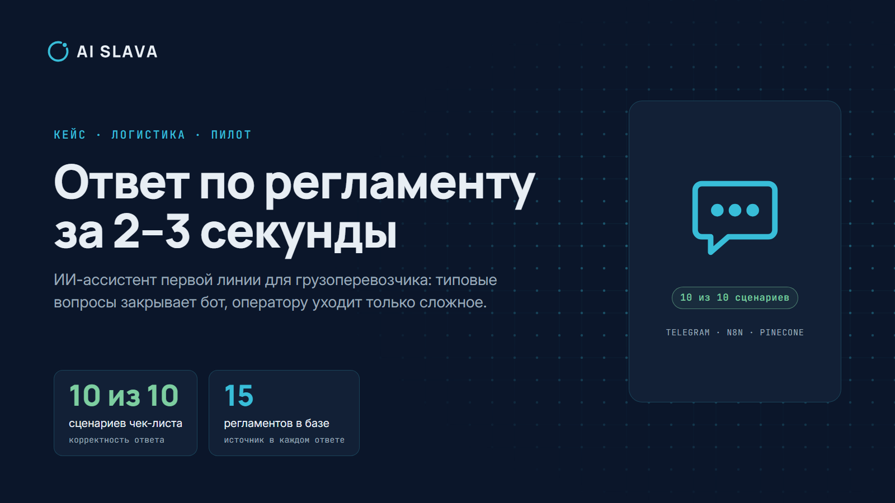

Экспресс-доставка по России и за границу
- «Где мой груз»: поток типовых обращений съедает операторов
- Переносы, возвраты и претензии идут перепиской
- Документы и статусы по международным отправкам собирают вручную
Логистика целиком · от диагностики до рабочего контура
Берём один процесс, считаем ручную работу в часах и рублях, говорим, что менять первым и что не трогать. Затем сдаём то, чем можно пользоваться: правило, связку систем или ИИ-ассистента. Для экспресс-доставки, агентов и брокеров, перевозчиков и корпоративных логистических отделов.
Форма занимает две минуты. Отвечаю обычно в тот же рабочий день.
Пилотная программа: 3 места →Для кого
Заявка в кабинете, статус в трекинге, тариф в калькуляторе — это не значит, что операционка собрана. Поэтому не начинаем с бота на фронте. Сначала фиксируем, какой процесс реально ест часы и деньги.
Работаем и с другими сегментами логистики (3PL, 4PL-операторы, склады): начинаем с разбора процесса. Эффект зависит от объёма, качества данных и того, кто владеет процессом. Без этих трёх условий цифру не обещаем.
Для каких подразделений
Диагностика подходит для любого подразделения. Рабочий контур собираем из того, что уже работает, остальное согласуем после диагностики. Метки на карточках честные.
Ассистент первой линии отвечает по регламентам и называет документ и раздел. Сложное передаёт оператору.
Запись звонка или встречи превращается в текст и список пропусков по вашему чек-листу, без прослушивания целиком.
ИИ-наставник проводит нового сотрудника по регламентам, проверяет знания и сохраняет результат теста.
Ассистент по базисам поставки и регламентам. Следующий шаг: извлечение полей из инвойсов и упаковочных листов.
Загрузили выгрузку CSV или Excel, спросили обычным языком, получили вывод, график и отчёт DOCX.
Ассистент собирает данные клиента в диалоге и передаёт заявку оператору. Разбор записей звонков продаж по чек-листу.
Счета подрядчиков, закрывающие документы, дебиторка: правило, связка систем или ассистент. Демо по документам готовим.
Каталог исключений рейса, шаблоны уведомлений клиенту и правила эскалации. Клиент узнаёт о срыве от вас.
Чек-лист пакета претензии, хронология из документов и черновик письма. Подписывает человек.
Что значат метки. «Демо» и «учебный пилот» — работающие прототипы на открытых материалах, не клиентские внедрения. «Методика» — расписано в плане диагностики, работающего прототипа пока нет. Подробности и демо: профиль студии на маркетплейсе Zerocoder.
Подход к работе
Автоматизация ради автоматизации сжигает бюджет. Поэтому четыре шага, и следующий не начинается, пока не виден результат предыдущего.
Один процесс, один созвон. Понимаем, есть ли что считать и подходит ли задача под первый этап.
15 минут, бесплатноКарта «как есть», потери в часах и рублях, три гипотезы. Фиксируем границы: один процесс, срок, бюджет.
5 рабочих днейСамый простой способ, который закрывает потерю: правило, связка систем или ассистент. Решающее слово за человеком. Передаю рабочий инструмент с инструкцией, а не презентацию.
10–14 рабочих дней, срок фиксируем до стартаМониторинг, исправление сбоев и доработки по согласованным правилам. Следующий процесс берём после эффекта на текущем. ИИ-агент только если правило повторяется, данные есть и на финале остаётся человек.
по результатуЧто вы получаете
Каждая цифра в отчёте с меткой: измерено, рассчитано, оценка или неизвестно. Если данных нет, так и пишем, ноль не подставляем.
4 страницы. Пример формата: компания вымышленная, данные условные.
Правило закрытия счёта и эталон тарифа.
TMS и 1С. Агента ставим только после правила.
Условия работы
Диагностика занимает 5 рабочих дней. Срок и стоимость первого контура фиксируем до старта. Объём не расширяем без отдельного согласования. Что не входит в этап, пишем в договоре.
Работаем по договору: фиксируем этап, оплату и результат. У проекта один ответственный: я веду задачу от разбора до сдачи и отвечаю за срок.
После запуска вы получаете инструкцию «кто что нажимает», журнал работы системы и доступы. Сопровождение (мониторинг, исправления, доработки по правилам) оформляем отдельным этапом.
Не прошу логины и пароли боевых систем: для диагностики достаточно выгрузок. Если в проекте есть персональные данные, по умолчанию храним их в России и подписываем NDA. Что именно передавать, согласуем заранее.
Юридически значимые действия (ставка клиенту, претензия наружу, платёж, допуск водителя) остаются за человеком. ИИ готовит черновик, система ведёт журнал, у действий есть откат.
Пилотная программа
Клиентских кейсов у студии пока нет, и мы не изображаем обратное. Поэтому первые три проекта идут на особых условиях. Цену называю в разговоре.
Кому подходит
Кейс
ИИ-ассистент первой линии для грузоперевозчика в Telegram. Закрывает типовые вопросы по регламентам, в каждом ответе называет документ и раздел, а оператору передаёт только сложное.
Пилот на открытых материалах. Не коммерческий заказ и не связан с компанией, чьи публичные регламенты использованы. Цифры из прогона по чек-листу 21.07.2026. Эффект зависит от объёма и качества регламентов.

Запись диалога в Telegram: тариф, упаковка, документы, терминал, претензия. В каждом ответе документ и раздел. На вопросы вне темы бот отказывает, а попытку сменить роль передаёт оператору.
Об авторе
28 лет в логистике, из них 11 лет в совете директоров DHL Express: регион, продажи и маркетинг России. Рост выручки региона 20%+ в год, сеть 150+ точек.
Сначала определяю, где процесс теряет время, кассу и качество. Потом предлагаю только то, что можно объяснить, посчитать и внедрить без лишнего масштаба. Контур собираю сам: Python, Telegram, n8n, SQL и нейросети. У проекта один ответственный: я веду его от разбора до сдачи.
Это опыт основателя в DHL Express, а не кейс студии. Кейсы AI SLAVA появляются отдельно, с актом и цифрами клиента.
Вопросы
Стоимость называю после короткого разбора: она зависит от процесса и объёма. Для первых трёх проектов действуют пилотные условия.
Системы не меняем. Работаем с процессом вокруг них: правила, сверка, исключения, документы, обращения. TMS, 1С и ЭДО остаются источником правды.
Юридически значимые действия остаются за человеком. Система ведёт журнал: что сделала и на каких данных. Для действий есть откат. На старте ассистент готовит черновик, а не действует сам.
Если в проекте есть персональные данные, по умолчанию храним их в России и подписываем NDA. Для диагностики достаточно выгрузок, что именно передавать, согласуем заранее.
Нет. Логины, пароли и токены боевых систем не нужны. Для диагностики хватает выгрузок и интервью.
Я лично. У проекта один ответственный: веду задачу от разбора до сдачи. Если нужна отдельная роль, например разработчик под интеграцию, согласуем это до старта.
Скажу прямо. Если задача закрывается правилом или макросом в Excel, заказ не беру.
Разбор на 15 минут бесплатный и без обязательств. Диагностика и всё дальнейшее идут по договору с фиксированными сроком, объёмом и стоимостью.
Следующий шаг
Опишите задачу в короткой форме или напишите в Telegram. Разбор на 15 минут бесплатный. Если её можно закрыть макросом в Excel или автоматизация нецелесообразна, скажу об этом прямо и не возьму заказ.
Отвечаю в рабочие дни до 19:00 по Москве. Форма на Яндекс Формах: данные нужны только для ответа на заявку, подробности в политике обработки данных.